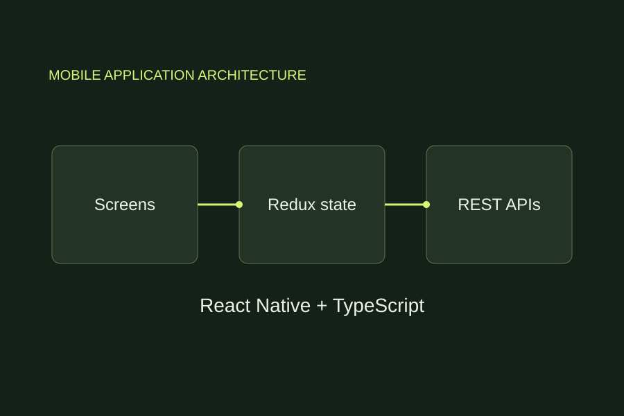
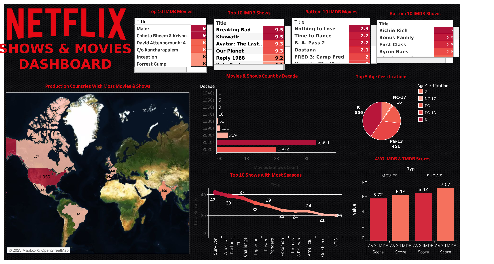
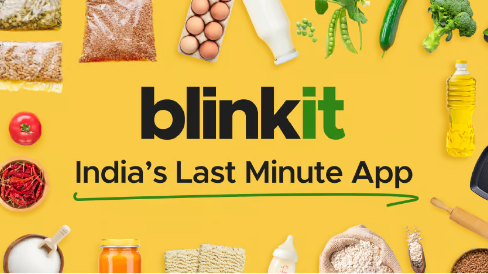
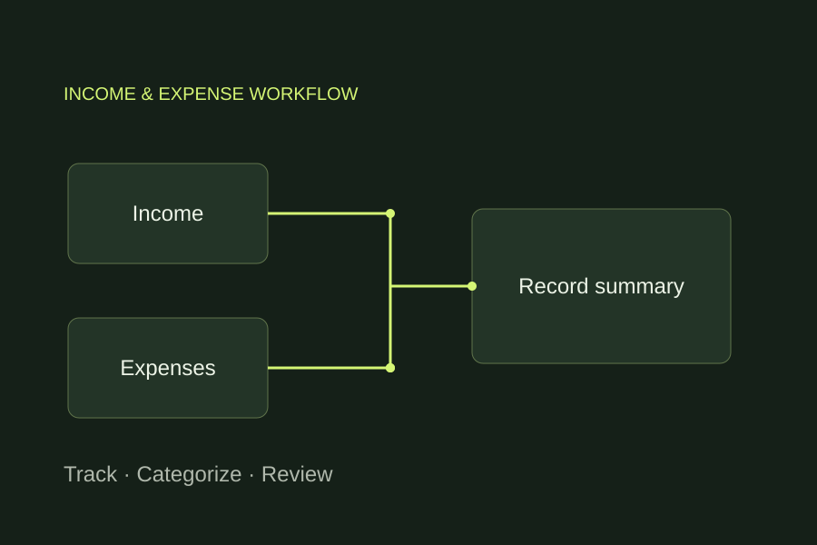
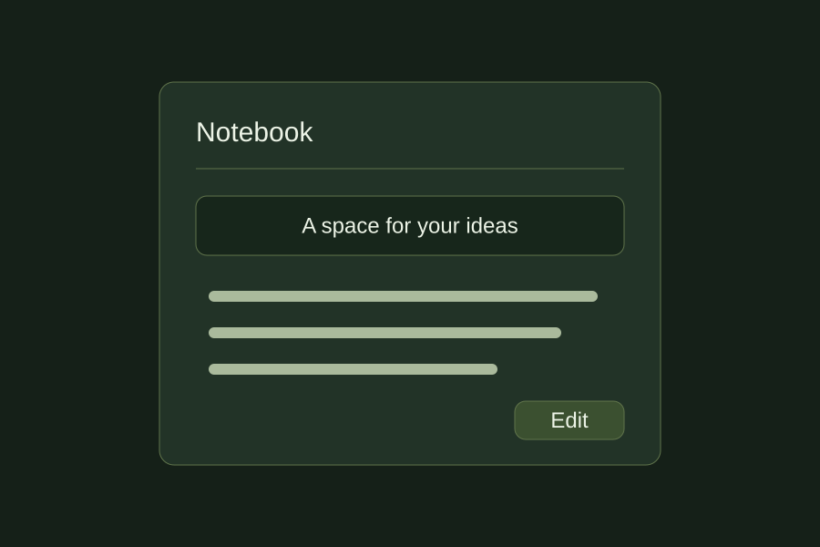
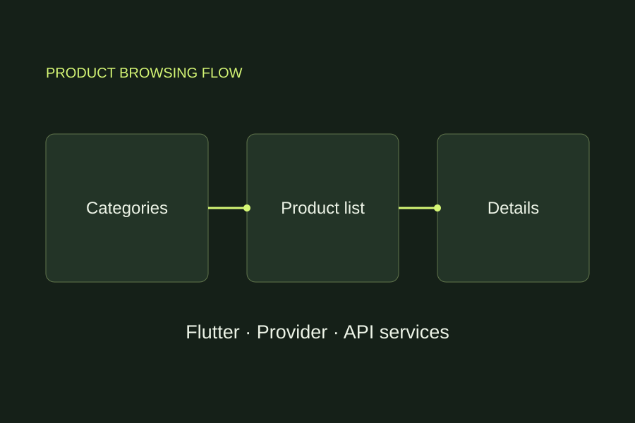
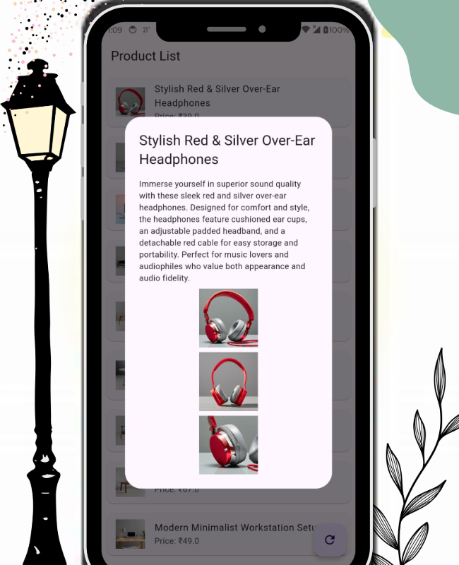
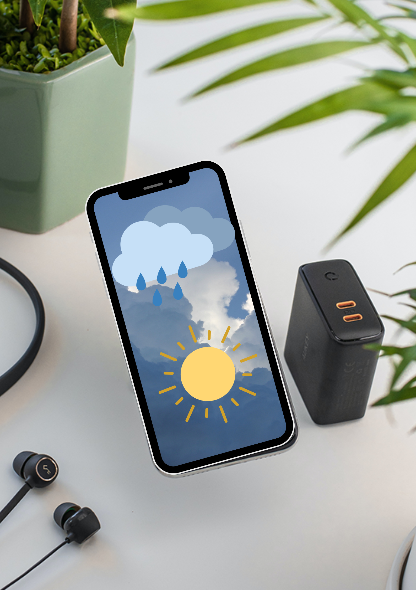
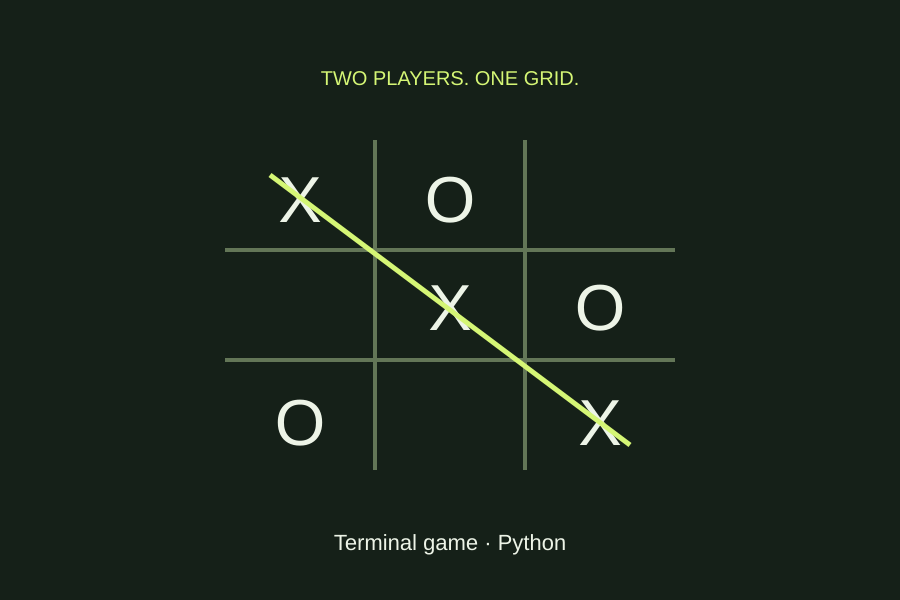
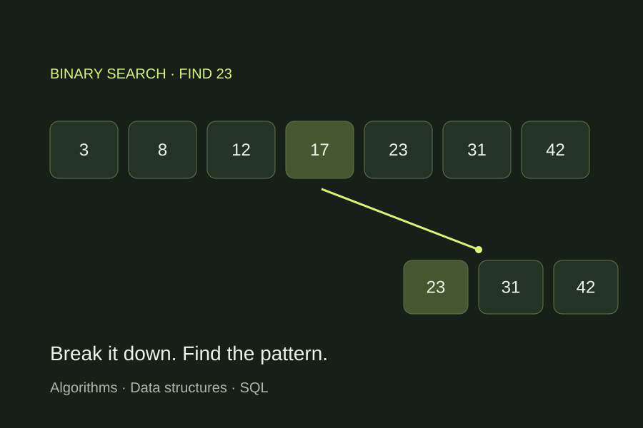

Loan Data Verification Copilot
Reconcile loan records across three source types, review Groq AI recommendations, and verify decisions with human approval and an audit trail.
SOFTWARE ENGINEER · INDIA
Hi, I’m Avnish—a Software Engineer at Infosys. I build full-stack applications, AI-assisted workflows, and automated tests that turn complex requirements into useful software.
01 / PROJECTS & EXPLORATIONS
From AI-assisted workflows to mobile apps and data exploration. A collection of projects, experiments, and things I’ve learned by building.
Reconcile loan records across three source types, review Groq AI recommendations, and verify decisions with human approval and an audit trail.
Recognize A–Z and 0–9 hand gestures with MediaPipe landmarks and a Random Forest classifier, using a live webcam feed.
A multimodal agent that answers questions about uploaded videos and enriches its analysis with web context.

Mobile · InternshipA tech-commerce mobile application. My internship work included fixing build issues, integrating screens with REST APIs, and validating application flows.

Data analysisExplore a Netflix titles dataset through SQL queries covering ratings, genres, age certifications, and the distribution of content over time.

Data analysisA grocery-sales analysis covering revenue, customer ratings, product categories, and outlet performance through SQL and dashboards.

Web applicationA Django application with authentication and separate expense and income workflows for organizing financial records.

Web applicationA React notes application with sign-in and sign-up screens, shared note state, and reusable interface components.

Mobile applicationBrowse products by category with dedicated detail screens, API services, and shared product state.

Mobile applicationAn earlier product-list app with refresh controls, product images, and a dialog for viewing product details.

Mobile applicationA cross-platform weather project with current conditions, hourly forecast components, and additional weather details.
A focused USD-to-INR conversion app built with Flutter. This learning project uses a fixed conversion rate.
 Web application
Web application
A small interactive web project that calculates body mass index from height and weight inputs.

Python · LearningA two-player terminal game with a numbered board, alternating turns, and checks for winning combinations.

Algorithms · LearningA growing collection of coding solutions and SQL exercises, covering problem solving and database query patterns.
 Web application
Web application
My home on the web: professional experience, projects, certifications, and a way to get in touch.
02 / THE PERSON BEHIND THE CODE
I connect application development, AI workflows, and software quality.
I’m a System Engineer at Infosys in Bengaluru, co-developing an early-stage AI-assisted test generation framework with a senior engineer. My work connects Jira requirements, test scenarios, reusable automation, and reporting.
I graduated from VIT Bhopal in 2025 with a B.Tech in Computer Science and Engineering and a CGPA of 8.56/10. My projects span React, FastAPI, mobile development, data validation, and machine learning.
Originally from Bokaro, Jharkhand. Outside work, I enjoy basketball, chess, table tennis, and reading.
Download my 2026 résuméJava · Python · SQL
React · React Native · FastAPI
MongoDB · MySQL · REST APIs
Groq API · LLM integration
scikit-learn · OpenCV · MediaPipe
Playwright · Selenium · pytest
Cucumber · REST Assured · Postman
Git · GitHub · GitHub Copilot CLI
VS Code · Android Studio
Jira REST API · Postman
Agile / Scrum · Data validation
Flutter · Dart · C++
HTML · CSS · JavaScript
B.Tech in Computer Science & Engineering
CGPA: 8.56 / 10
200+ problems solved across
LeetCode and GeeksforGeeks
AI applications · Cloud foundations
Software testing · Data analysis
PROFESSIONAL EXPERIENCE
OCT 2025 — PRESENT
System Engineer · Bengaluru
Co-developing an AI-assisted test generation framework, integrating Jira REST APIs, and building reusable UI and API tests with Selenium, Playwright, Cucumber, REST Assured, and SQL.
AUG — SEP 2025
Application Developer Intern · Remote
Resolved 10+ React Native build issues, connected application screens to REST APIs, and debugged flows and API responses.
JAN — JUN 2025
Software Engineer Intern · Pune
Validated 1,000+ product records for backend ingestion and reduced processing time by 20% through data validation and workflow improvements.
03 / WHAT I BRING
React and React Native interfaces connected to REST APIs, with Python and FastAPI backends, MongoDB, and SQL. Experience turning product requirements into usable application flows.
Explore the applicationsLLM integrations, structured data processing, and agent-based workflows. I build around traceability and human review, from loan-data reconciliation to test generation.
See the AI projectsReusable UI and API tests with Playwright, Selenium, pytest, and REST Assured, supported by SQL checks, data validation, and clear reporting.
Let’s talk engineering04 / CERTIFICATIONS
Building a deeper foundation
for the work ahead.
Professional
View credentialFoundations
View credential05 / LET’S CONNECT
Have a project in mind, an opportunity to share, or just want to talk tech? I’d love to hear from you.
avnish1234pandeys@gmail.com +91 77828 16343